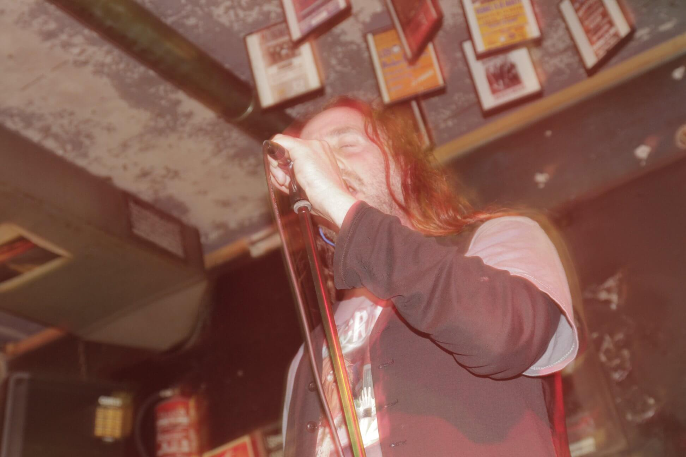
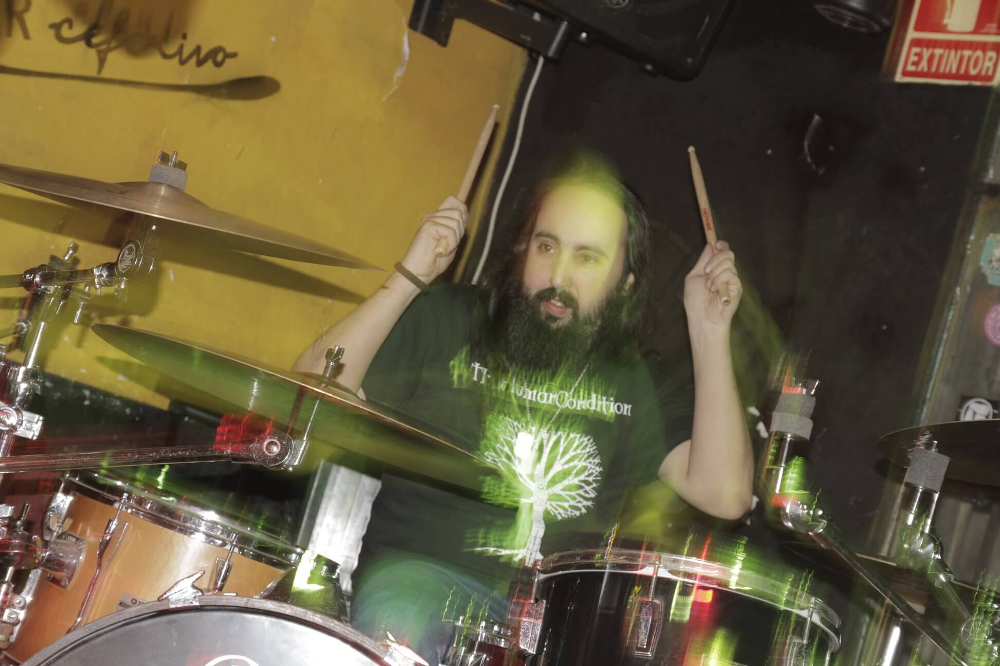

Photos

Gustavo

Javi

Simón del Desierto was founded in 2014 by Julio and Javi following the break-up of the sludge band Dispain. With this new band both wanted to create a doom metal band with influences of the maryland doom metal scene. In these first months the band worked as instrumental ensemble.
In 2015 Carmen joined the band as a singer. With this line-up the band recorded the first EP "Ursaria" in 2016 at Estudios Brazil and played some shows in the Madrid area.
Following the release of Ursaria via ItLivesInTheWoods Records Carmen left the band.
In 2018 Simón del Desierto found a new singer: Gustavo (Cuerno, Lords of Bukkake). An experienced singer and musician, Gustavo created the voice lines for what would be the new "Purgatory" EP.
For this new recording guitars and drums were recorded in Madrid while voice parts were recorded at MoonTower Studios in Barcelona. Purgatory EP offers four songs in which the band shows a mature sound for fans of doom metal acts as Pentagram, Unorthodox, Penance, Iron Man and Cathedral.
"Simón del Desierto" is a film directed by the surrealist filmaker Luis Buñuel in 1965.
Doom metal, sometimes doom rock.
Carla del Palacio, follow her on Instagram as @the_unmaker and @magicarl.ink (tatoos)
The Ursaria EP was released by ItLivesInTheWoods and Factoria del Ruiu and it is available on CD format. Purgatory EP is available only in digital format at the moment.